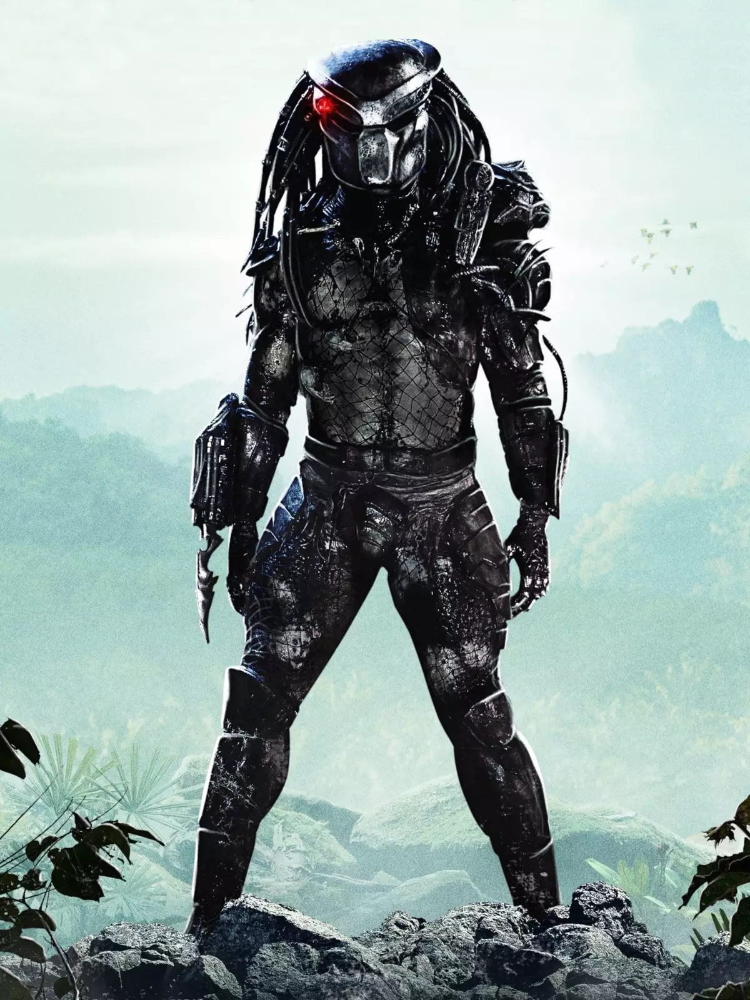
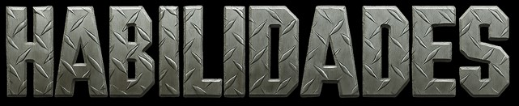

Os Predadores, também conhecidos como Yautja, medem entre 2,1 e 2,4 metros de altura,
impondo uma presença intimidadora. Sua força é muito superior à humana,
permitindo levantar grandes pesos com facilidade. São extremamente resistentes e capazes de suportar quedas e ferimentos graves.
A aparência é marcada por pele reptiliana, mandíbulas externas e olhos pequenos e brilhantes, reforçando o aspecto alienígena.
Embora utilizem tecnologia de invisibilidade, sua pele já é naturalmente resistente e adaptável, garantindo uma proteção extra.
Eles são caçadores natos que seguem um código de honra, escolhendo sempre presas que ofereçam um verdadeiro desafio. Apesar do porte físico, demonstram grande agilidade e destreza em combates corpo a corpo.
A visão avançada permite enxergar em diferentes espectros, principalmente no infravermelho, facilitando o rastreamento de alvos. Além da força bruta, os Predadores também são inteligentes e estratégicos,
elaborando emboscadas e se adaptando rapidamente durante a luta.
Os Predadores utilizam uma máscara biométrica que amplia sua visão, traduz linguagens, analisa terrenos e grava sons. O dispositivo de camuflagem os torna praticamente invisíveis, ideal para caçadas silenciosas.
Suas armas incluem o canhão de plasma montado no ombro, lâminas retráteis usadas em combate próximo, além de discos de caça e lanças letais.
Como último recurso, carregam um dispositivo de autodestruição nuclear, ativado em caso de derrota para preservar a honra e eliminar rastros de sua tecnologia.
A caça é vista como um ritual sagrado dentro da cultura Predador. Eles não atacam seres considerados fracos ou indefesos, como crianças ou pessoas doentes, pois não veem honra em tal combate.
Valorizam a coleta de troféus, geralmente crânios e colunas vertebrais, como símbolos de vitória e status dentro de sua sociedade.
Cada batalha é uma forma de provar coragem, habilidade e superioridade, reforçando sua tradição de guerreiros caçadores.